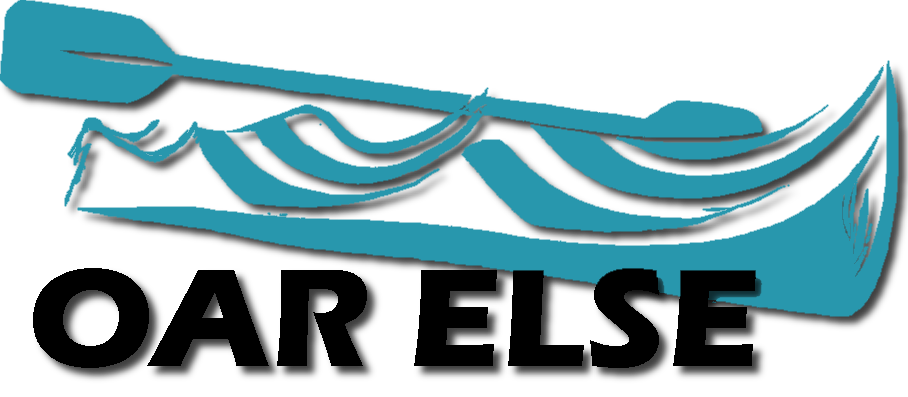

Overview
Purpose
The purpose of this site is to provide customers of Oar Else© with easy access to our list of products and services, as well as contact information and an explanation of the company's history.
Audience
This site is intended for those who are able to use Oar Else© products, which means adults that are physically capable of white water rafting and are looking for equipment for their trips. We expect visitors to the site to access our content via both desktop and mobile devices.
Branding
Website Logo
Style Guide
Color Palette
Palette URL:
https://coolors.co/187b8e-1c5734-e4be7f-FFFFEF| Primary | Secondary | Accent 1 | Accent 2 |
|---|---|---|---|
| [#187b8e] | [#1c5734] | [#e4be7f] | [#FFFFEF] |
Typography
Heading Font: Libre Baskerville
Paragraph Font: Lato
Normal paragraph example
The best Whitewater Rafting in Colorado, White Water Rafting Company offers rafting on the Colorado and Roaring Fork Rivers in Glenwood Springs. Since 1974, we have been family owned and operated, rafting the Shoshone section of Glenwood Canyon and beyond.
Colored paragraph example
Trips vary from mild and great for families, to trips exclusively for physically fit and experienced rafters. No matter what type of river adventures you are seeking, White Water Rafting Company can make it happen for you.
Navigation
Site Map
Wireframes
Home